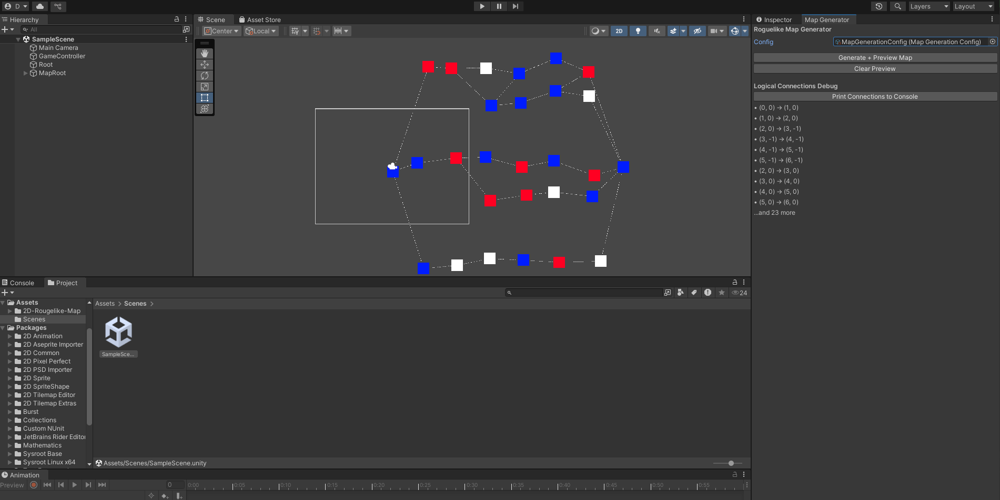
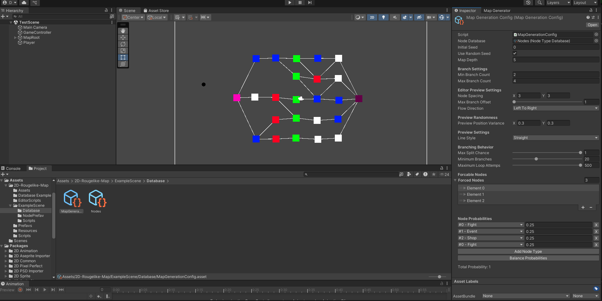
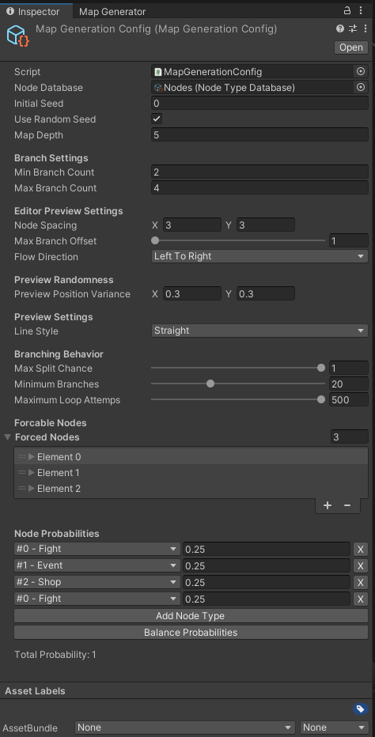

Introduction
This modular Unity tool generates node-based maps procedurally using controlled, parameterized randomness. Designed for flexibility, it lets developers build replayable map structures for roguelike and modular progression systems — while retaining full control over map flow, branching, and node types.
Practical applications
- Procedural overworld or dungeon maps for 2D games.
- Node-based event chains or challenge layouts.
- Main map progression systems with developer-defined nodes.
- Minigame logic or modular sub-systems.
- Dynamic, replayable layouts requiring controlled randomization.
Design philosophy
The generator is built around modular, editor-first development. Procedural generation is fully parameterized to offer structured randomness — giving designers control while benefiting from replayability. Its clean, API-friendly structure lets programmers extend the tool easily, integrating node graphs into gameplay systems without friction.
Key features
- ScriptableObject node database system.
- Seeded / random map generation with reproducibility control.
- Branching, merging, and forced-node support.
- Editor window with real-time visual previews.
- Clean runtime API for querying nodes and connections.
- Modular, extendable architecture for designers and developers.
Screenshots



Launching soon
Currently pending Unity Asset Store approval. Reach out and I'll let you know the moment it's live.